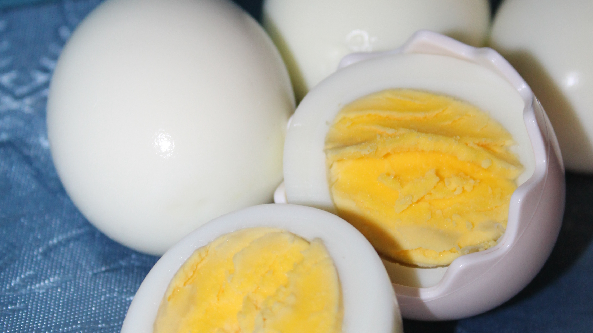

By: Axel Giraldo
Who hasn't eat some boiled eggs? Some fundamentals of the cook righ here. May not be the most delicious meal in the world yet they are present almost anywhere. Simple and efficient, hard to beat combo.
But, how does one make one of these wonders of the nature? Well, we are here to learn even the most simple of things
Boil the eggs. You're welcome.
For more recipes, visit our main page.